1. Помилки при використанні Git Bash
1.1. Помилка аутентифікації
Помилка
Помилка аутентифікації виникає, коли commit створено без вказання електронної пошти, або зазначена електронна пошта відрізняється від тієї, що використовується в Gerrit. Під час спроби виконати git push з’являється помилка аутентифікації.
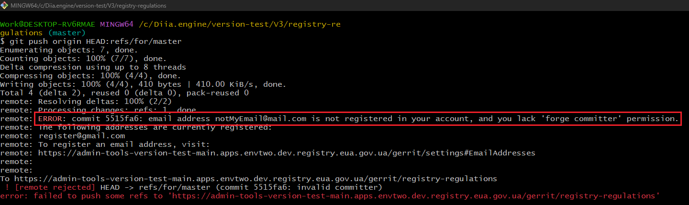
Алгоритм усунення
Щоб виправити помилку, оновіть конфігурацію Git з правильними даними:
git config --global user.name "Ваше ім'я користувача"git config --global user.email "you@example.com"| Докладніше про налаштування Git можна прочитати на офіційному сайті Git. |
2. Типові помилки при роботі з Gerrit
2.1. Помилка missing Change-ID при спробі відправлення змін до віддаленого репозиторію Gerrit
Помилка
git push не виконується через помилку "missing Change-ID in message footer".
Ця помилка виникає, коли у вашій директорії відсутній файл commit-msg у системній Git-директорії регламенту: registry-regulations\.git\hooks.
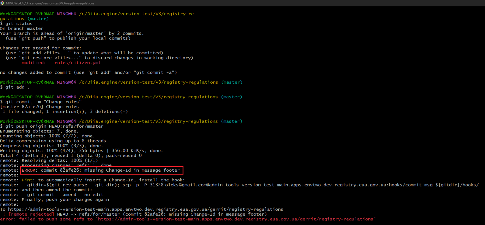
Алгоритм усунення
Щоб виправити помилку, додайте файл commit-msg до директорії registry-regulations\.git\hooks вашого регламенту. Цей файл можна отримати з віддаленого репозиторію Gerrit.
-
Скопіюйте посилання, яке використовується для клонування регламенту.
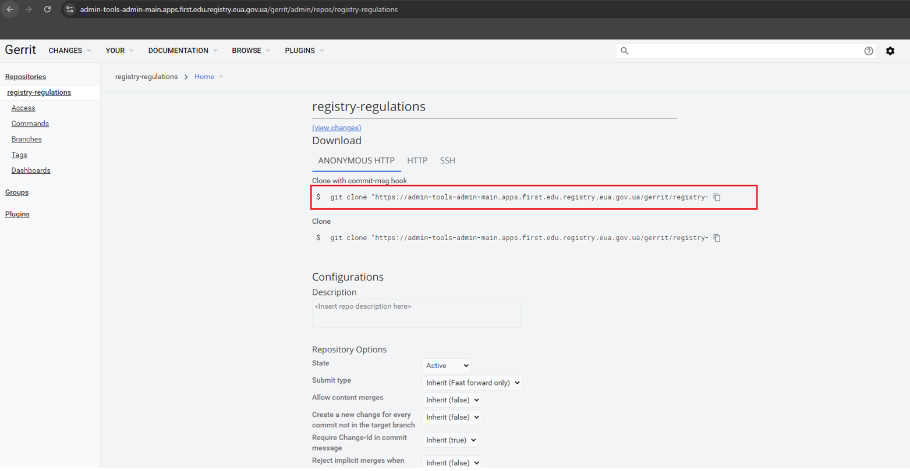
-
З цього посилання скопіюйте фрагмент для виконання у командному рядку.
Clone with commit-msg hookgit clone "https://admin-tools-admin-main.apps.first.edu.registry.eua.gov.ua/gerrit/registry-regulations" && (cd "registry-regulations" && mkdir -p .git/hooks && curl -Lo `git rev-parse --git-dir`/hooks/commit-msg https://<your registry name>-main.apps.<cluster name>.registry.eua.gov.ua/gerrit/tools/hooks/commit-msg; chmod +x `git rev-parse --git-dir`/hooks/commit-msg)Обов’язково замініть:
-
<your registry name>на назву вашого реєстру; -
<cluster name>на ім’я середовища, в якому розгорнуто регламент.
-
-
Після цього виконайте команду в командному рядку для завантаження файлу
commit-msgу директорію registry-regulations\.git\hooks.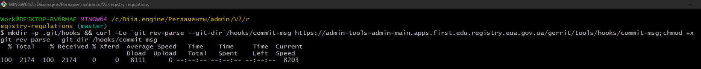
-
Далі виконайте команду для виправлення останнього коміту без змін.
git commit --amend --no-edit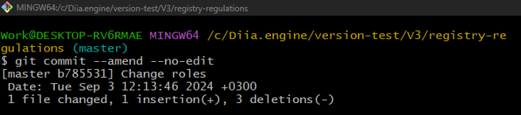
-
Після цього зробіть
git pushбез змін.git push origin HEAD:refs/for/master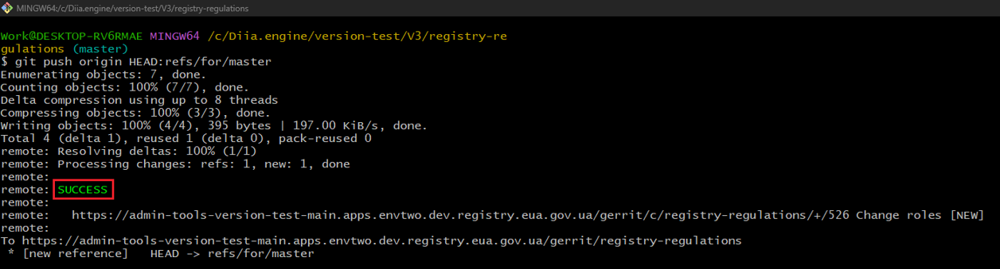
| Якщо вам не вдається додати hook або потрібно додати лише одну зміну, використовуйте альтернативний шлях, представлений нижче. |
Альтернативний шлях
-
Створіть нову зміну вручну через інтерфейс користувача в Gerrit:
-
Заповніть обов’язкові поля:
-
Select branch for new change:
master -
Description: впишіть опис зміни.
-
-
Скопіюйте Change-Id у новій зміні.
Change-Id: I4a63ec798850c1716a432e8c3457613cb9ac8fd8
-
Додайте Change-Id у текстове повідомлення останнього коміту через IDE або командний рядок.
-
Виконайте команду для відправлення змін.
git push origin HEAD:refs/for/master -
Видаліть створену зміну вручну через інтерфейс користувача в Gerrit, якщо вона більше не потрібна.
2.2. Структура локального регламенту відрізняється від типової структури в Gerrit
Помилка
Структура регламенту, розгорнутого на локальній машині, може відрізнятися від типової структури Цифрового регламенту. Наприклад, можуть бути відсутні розділи data-model, bpmn тощо.
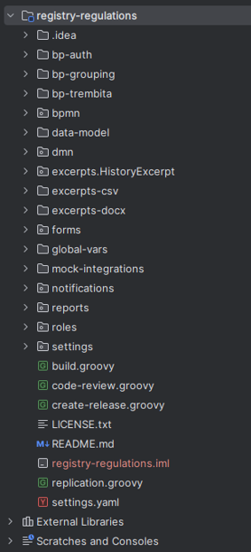
Алгоритм усунення
Щоб розв’язати цю проблему, переконайтеся, що ви працюєте з правильним репозиторієм registry-regulations.
-
Для розгортання регламенту на локальній машині використовуйте виключно репозиторій
registry-regulations.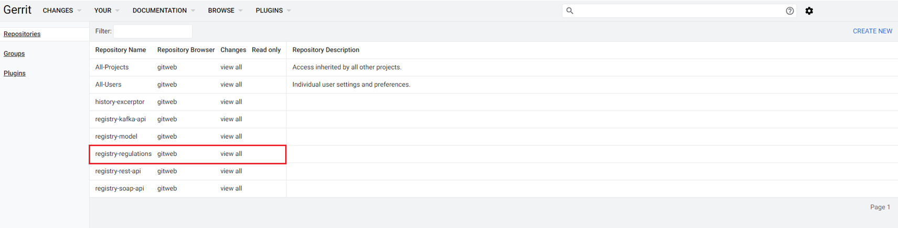
-
Якщо це ваш перший вхід до Gerrit, зачекайте 3-5 хвилин, а потім оновіть сторінку, щоб потрібний репозиторій з’явився.
2.3. Виникнення черги змін до регламенту в Gerrit
Помилка
Черга змін може виникнути, якщо накопичилися зміни, які не були інтегровані до master-гілки.
Приклад
Ви виконали git commit та git push, але на етапі рецензування коду виникла помилка в пайплайні MASTER-Code-review-registry-regulations.
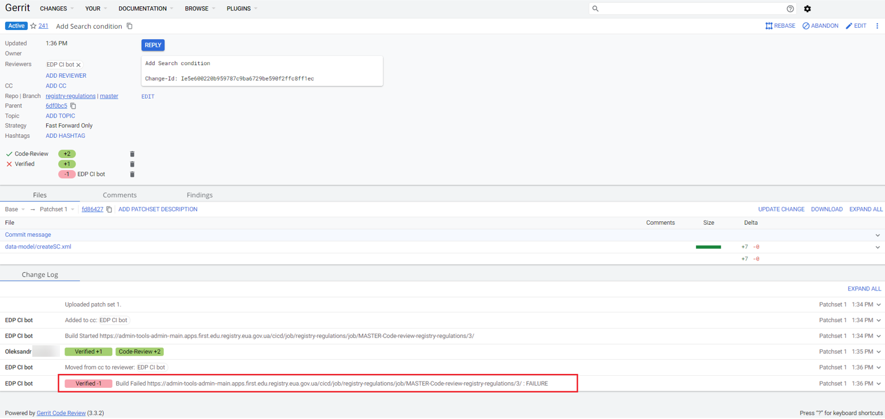
Опісля ви додали кілька змін без помилок. У Gerrit це виглядає так:
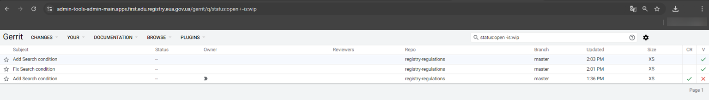
Якщо перейти до останньої зміни, можна побачити перелік конфліктів, які потрібно розв’язати для продовження роботи.
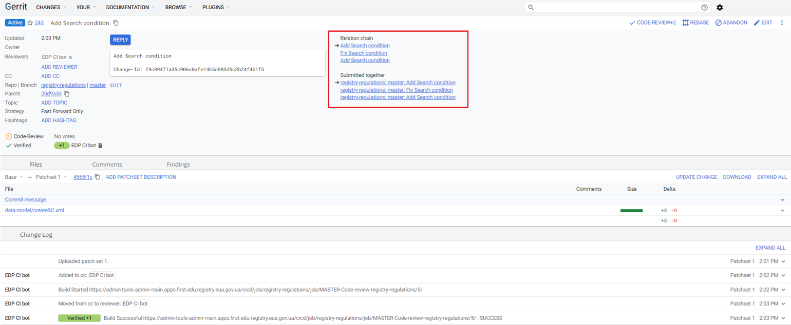
Алгоритм усунення
-
Якщо є можливість повторно внести всі зміни, їх можна видалити через вкладку у Gerrit, а потім знову додати їх без помилок.
-
Для кожної зміни виберіть пункт меню
Delete change.Послідовність видалення не є важливою. -
У локальному проєкті виконайте
Undo commit.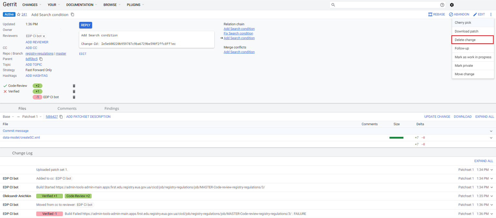
-
АБО ви можете по черзі додавати всі зміни в Gerrit, редагуючи файли з помилками безпосередньо в інтерфейсі Gerrit.
Якщо застосовувати зміни по черзі, для кожної з них буде запускатися окрема збірка коду. Важливо, щоб кожен етап збірки завершувався успішно. Ця процедура може зайняти певний час.
Кроки
-
Відкрийте в Gerrit збірку з помилками.
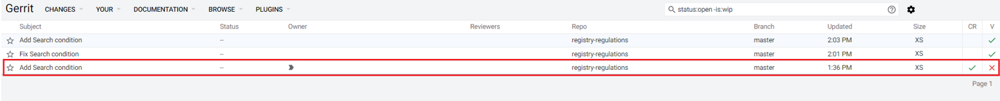
-
Натисніть кнопку
🖉 EDIT.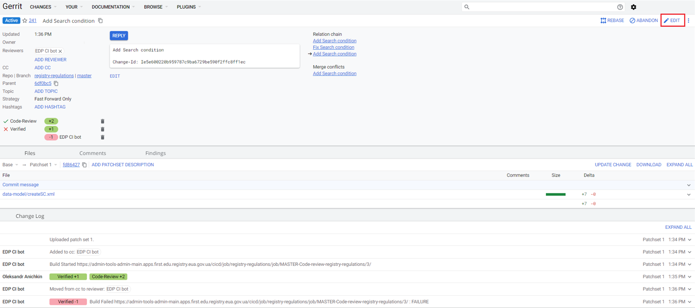
-
Виберіть файл, в якому потрібно внести зміни.
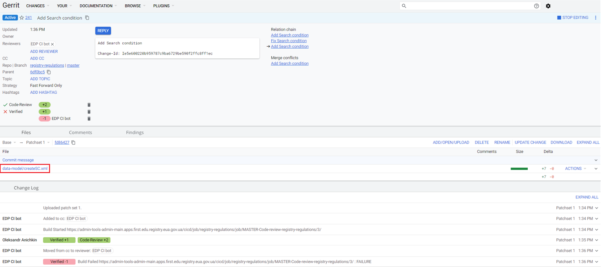
-
Відредагуйте файл і натисніть кнопку
SAVE.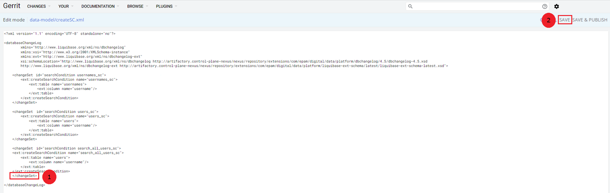
-
Натисніть кнопку
⭱ PUBLISH EDIT, потім■ STOP EDITING. -
Проведіть процедуру рецензування коду. Чекайте на успішне завершення пайплайну MASTER-Code-review-registry-regulations.
-
Далі натисніть кнопку
✓✓ SUBMIT, потімCONTINUEі зачекайте завершення збірки MASTER-Build-registry-regulations. Збірка має завершитися успішно.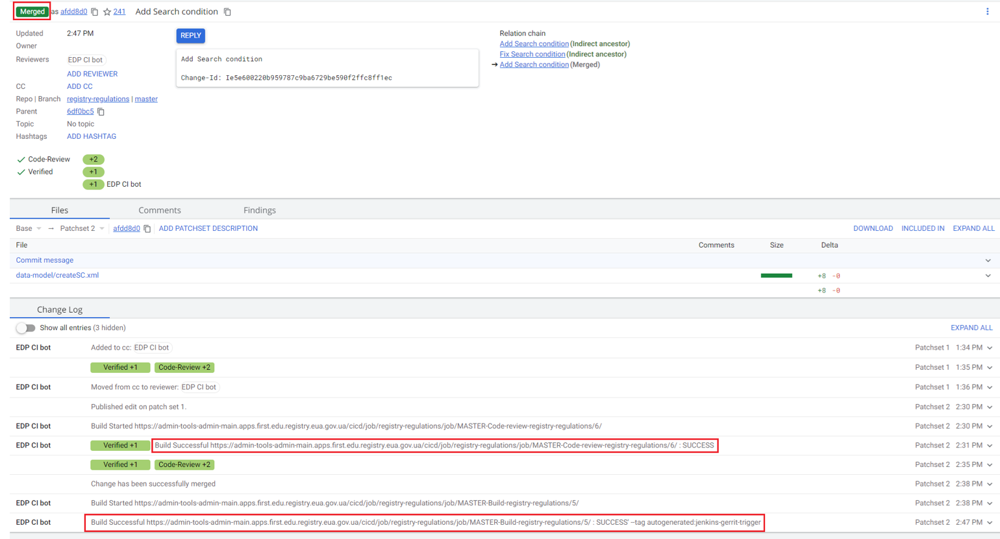
-
Перейдіть до наступної зміни та повторіть процедуру рецензування коду. Чекайте на успішне завершення пайплайну MASTER-Code-review-registry-regulations.
-
Натисніть кнопку
REBASE.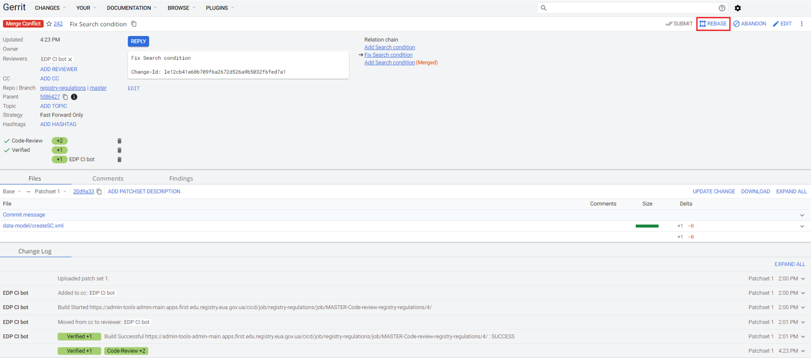
-
Натисніть кнопку
✓ VERIFIED+1.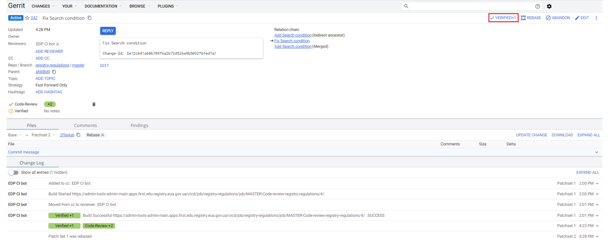
-
Натисніть кнопку
✓✓ SUBMIT, потімCONTINUEі зачекайте завершення збірки. Збірка має завершитися успішно.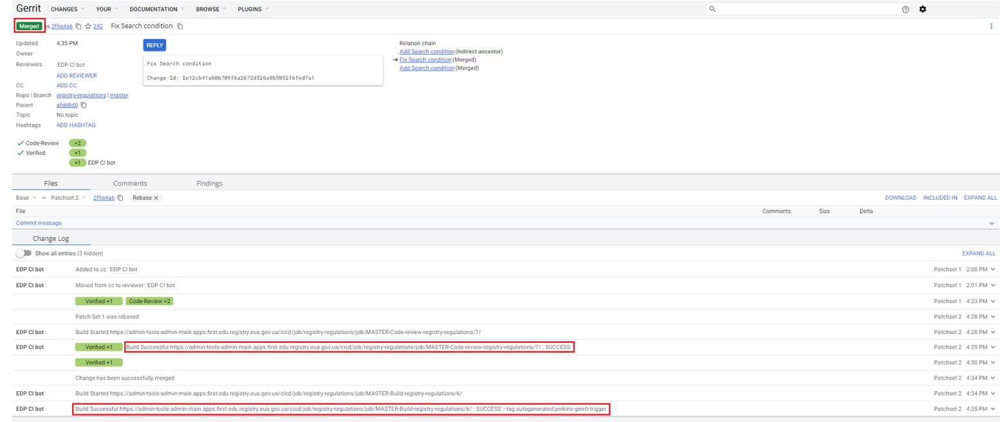
-
Повторіть ці кроки для всіх змін, що залишилися.
-
Після успішного виконання збірок у Gerrit на вкладці з’явиться наступне:
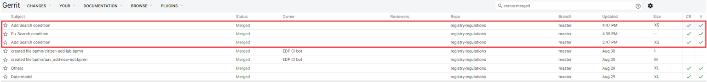
Це показує успішне розв’язання конфліктів у Gerrit.
-
Якщо залишилися зміни, які ще не були застосовані до
master-гілки, ви можете по черзі застосувати їх, використовуючи попередні кроки. Якщо при збірці виникають помилки, їх можна відредагувати в Gerrit. -
Після успішного застосування всіх змін у регламенті, оновіть локальний репозиторій ві дповідно до інструкції Deploying registry regulations in Gerrit.
| Якщо в процесі розробки регламенту виникають помилки, які неможливо виправити, ви можете виконати Сleanup регламенту реєстру як крайній захід. Такими помилками, наприклад, можуть бути: порушення цілісності даних у базі, помилки під час міграції даних, застосування merge до зміни з помилками. Докладніше про цю процедуру можна прочитати у розділі Registry regulations cleanup. |
3. Помилки при роботі Jenkins-пайплайнів
3.1. Помилка при зчитуванні схеми документа
Помилка
Liquibase видає помилку:
Unexpected error running Liquibase: Error parsing line 13 column 67 of data-model/createTables.xml: schema_reference.4: Failed to read schema document 'https://nexus.apps.envfour.dev.registry.eua.gov.ua/nexus/repository/extensions/com/epam/digital/data/platform/liquibase-ext-schema/latest/liquibase-ext-schema-latest.xsd', because 1) could not find the document; 2) the document could not be read; 3) the root element of the document is not <xsd:schema>
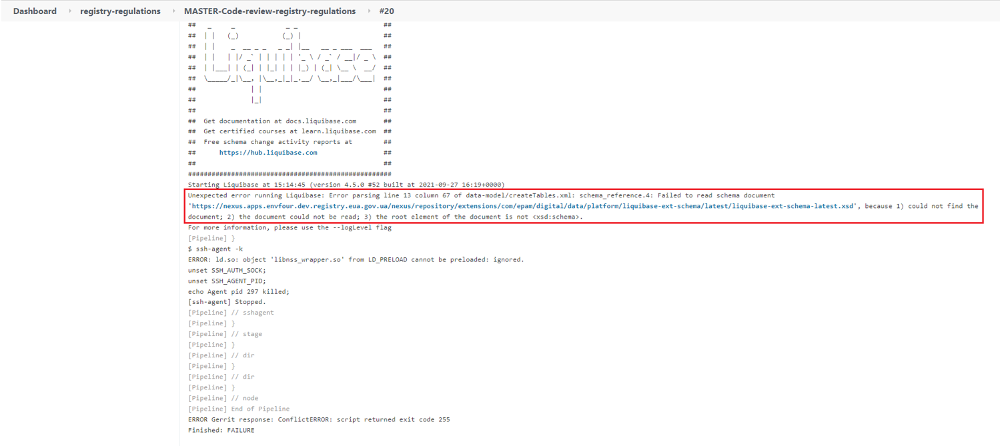
Ця помилка зазвичай виникає, коли вказано некоректне посилання на .xsd-схему для валідації .xml-файлів.
Алгоритм усунення
Щоб виправити цю помилку, замініть некоректне посилання на правильний URL:
http://artifactory.control-plane-nexus/nexus/repository/extensions/com/epam/digital/data/platform/liquibase-ext-schema/latest/liquibase-ext-schema-latest.xsdЗамінивши старе посилання на цей загальний URL, ви зможете успішно виконати валідацію .xml-файлів.
3.2. Некоректна міграція даних (change sets checksum)
Помилка
Ця помилка виникає, коли міграція даних відбувається некоректно, і значення контрольної суми (checksum) у changeSets не збігається. Це може трапитися через спробу змінити вже виконаний changeSet, або через створення іншого changeSet з тим самим ID.
Unexpected error running Liquibase: Validation Failed: 1 change sets check sum data-model/createTables.xml::add column (address) in table new_users::registry owner. was: 8:5811bcbfc0f7683bb3949b9b1203bfc1 but is now: :eae0a15fa62e6a5bac49783909e0cc55
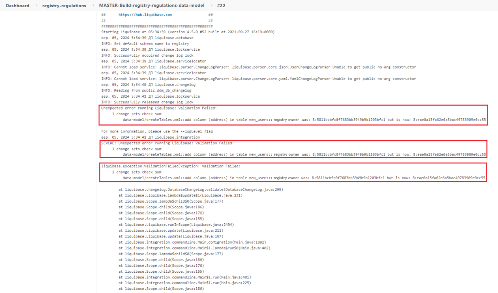
Алгоритм усунення
Щоб розв’язати проблему, знайдіть зміну, в якій редагувався вже застосований changeSet. Це можна зробити, переглянувши зміни у вкладці CHANGES в Gerrit. Після того, як знайдете проблему:
-
Видаліть зміни у changeSet, які викликали помилку.
-
Дочекайтеся успішного завершення збірки всіх пайплайнів регламенту.
-
Додайте нові changeSet з необхідними змінами.
| Детальний опис порядку змін у таблицях можна знайти на сторінці Алгоритм виконання операцій з таблицями та полями в базі даних. |
4. Помилки при роботі із бізнес-процесами та з додатком Camunda
Щоб уникнути помилок під час роботи з Camunda і збереження файлів бізнес-процесів, необхідно правильно створювати файли .bpmn. Рекомендований спосіб створення файлів бізнес-процесів можна знайти на сторінці Варіанти та загальний алгоритм моделювання бізнес-процесів.
|
4.1. Бізнес-процес не відкривається
Помилка
Бізнес-процес не відкривається.
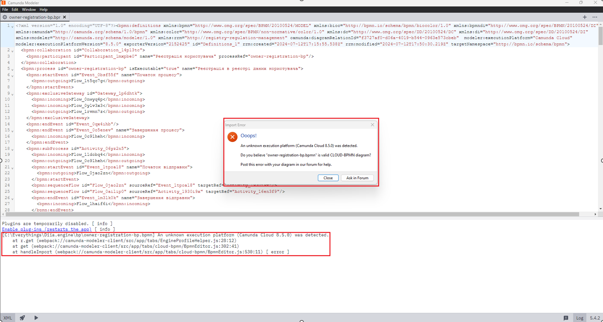
Алгоритм усунення
-
Натисніть кнопку
Close.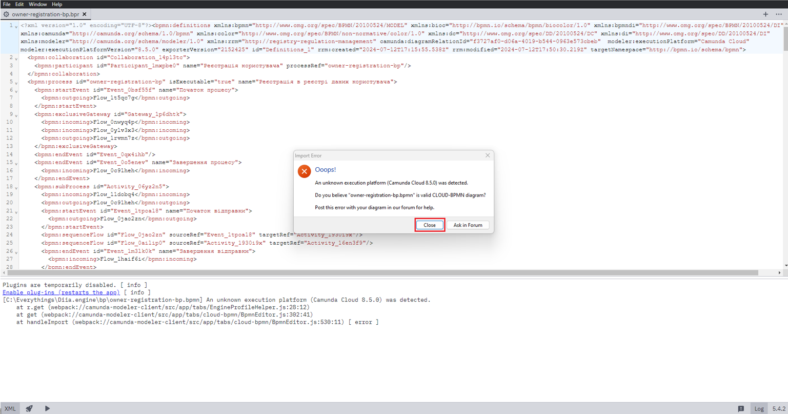
-
Видаліть у бізнес-процесі посилання на номер версії, який не підтримується.
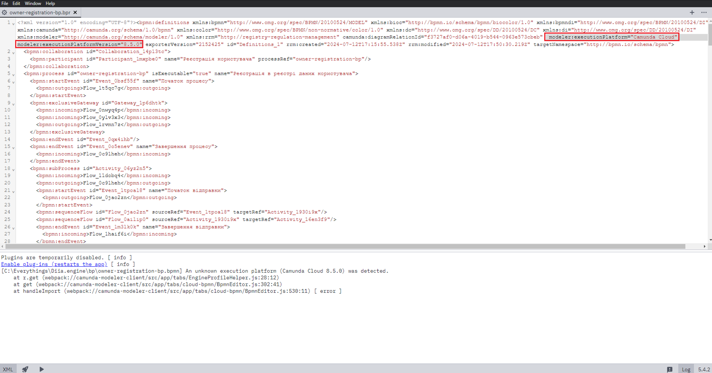
-
Після видалення збережіть файл через меню та закрийте бізнес-процес.
-
Відкрийте бізнес-процес знову через меню , щоб переконатися, що процес відкривається коректно.
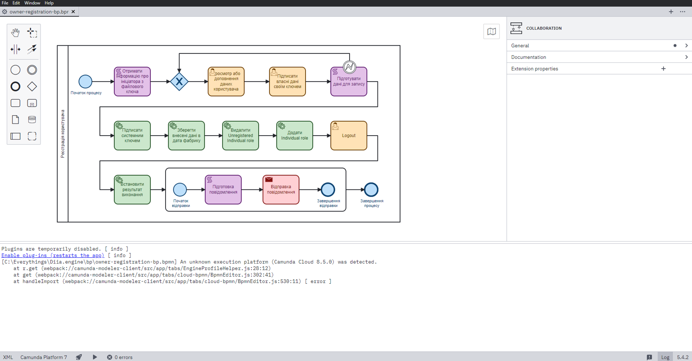
4.2. Не знайдено посилання на зовнішній ресурс
Помилка
Помилка може виглядати так:
Caused by: org.xml.sax.SAXException: Fatal Error: URI=null Line=542: The prefix "color" for attribute "color:background-color" associated with an element type "bpmndi:BPMNShape" is not bound.
Ця помилка означає, що відсутнє посилання на зовнішню бібліотеку, яка використовується у бізнес-процесі:
xmlns:color="http://www.omg.org/spec/BPMN/non-normative/color/1.0"
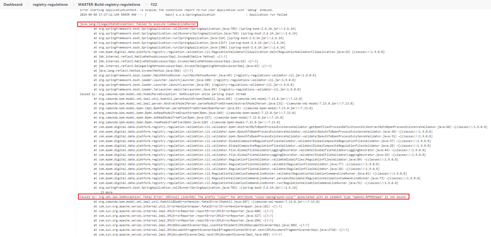
Алгоритм усунення
-
Додайте посилання
xmlns:color="http://www.omg.org/spec/BPMN/non-normative/color/1.0у "шапку" бізнес-процесу. -
Збережіть зміни у віддаленому репозиторії Gerrit та дочекайтесь успішного проходження всіх пайплайнів регламенту.
| Якщо виникає помилка через відсутність посилань на будь-які ресурси, додайте їх до шапки файлу бізнес-процесу. Докладніше про зовнішні ресурси можна переглянути на сайті розробника: https://docs.camunda.io. |
4.3. Бізнес-процес використовує не ініціалізовану змінну
Помилка
Під час запуску послуги у Кабінеті користувача виникає помилка, і процес надання послуги завершується з помилкою.
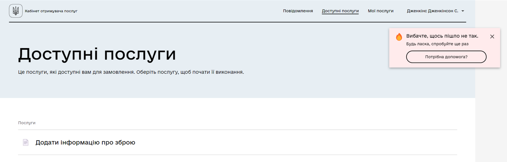
Знайти помилку можна так:
-
Відкрийте панель інструментів розробника у браузері за допомогою комбінації клавіш Ctrl+Shift+I або натисканням F12 та перейдіть на вкладку Network.
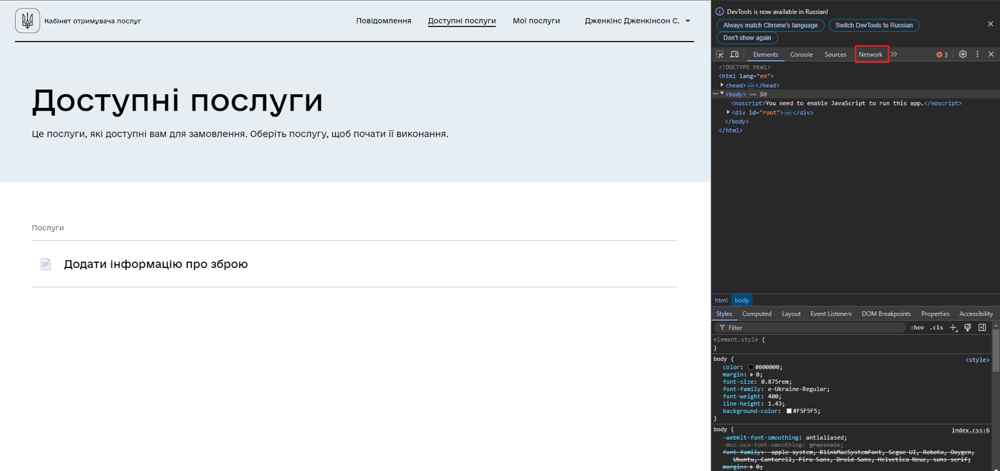
-
Замініть фільтр запитів з All на Fetch/XHR.
-
В панелі ліворуч (колонка “Name”) оберіть останній запит (start).
-
На панелі праворуч перейдіть на вкладку Response, щоб побачити параметри помилки —
traceIdі текст.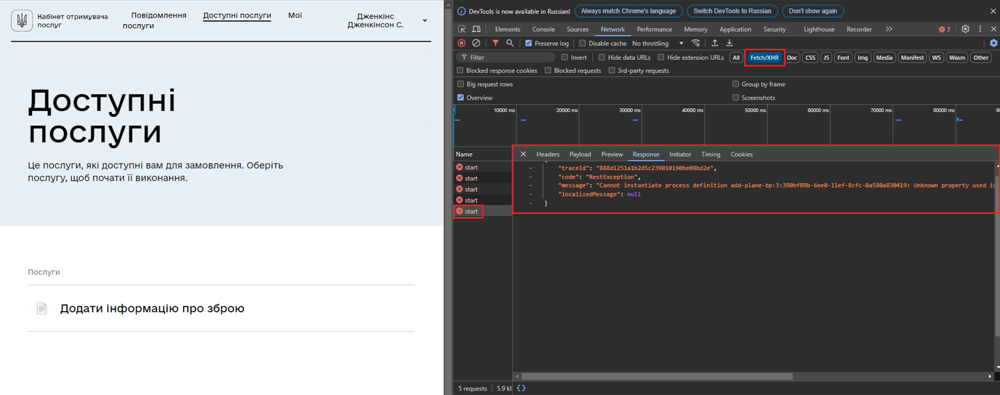
Текст помилки може виглядати так:
{"@timestamp":"2024-08-12T17:49:13.849Z","X-B3-TraceId":"06846406b3750ab9ddaeaf4372b81d07","X-B3-SpanId":"52738eac673bed97","X-Request-Id":"6dcb57b0-caa3-9b61-932f-94b1f4a11763","thread":"http-nio-8080-exec-3","level":"ERROR","class":"com.epam.digital.data.platform.bpms.rest.exception.mapper.CamundaRestExceptionMapper","line_number":46,"method":"toResponse","message":"Camunda rest communication error","exception":{"type":"org.camunda.bpm.engine.rest.exception.RestException","message":"Cannot instantiate process definition 7661ba4a-58d1-11ef-b689-0a580a830e73: Unknown property used in expression: ${inputPayload.prop(\"id\").value()}. Cause: Cannot resolve identifier 'inputPayload'"}}
| Якщо бізнес-процес завершився з помилкою, рекомендується використовувати інструменти розробника у браузері для діагностики та пошуку можливих причин. |
Алгоритм усунення
Помилка виникає через спробу використання JSON-об’єкта inputPayload, у якого відсутнє поле id: ${inputPayload.prop("id").value()} на початку бізнес-процесу.
Визначте походження об’єкта inputPayload.
-
Якщо це дані з форми, вкажіть коректну назву поля, значення якого буде використовуватись.
-
Якщо це об’єкт бізнес-процесу, зробіть один із наступних кроків:
-
Скористайтеся наявною скриптовою задачею для підготовки значення цього поля.
-
Додайте нову скриптову задачу для встановлення значення цього поля.
-
| При використанні змінних у бізнес-процесі необхідно переконатись, що вони визначені та заповнені перед тим, як будуть використані. |
Цю помилку можна відстежити під час дебагу бізнес-процесу.
| Докладніше про відлагодження можна дізнатися на сторінці Дебаг під час моделювання регламенту реєстру. |
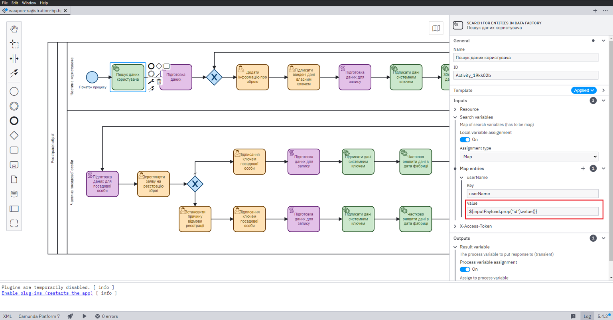
Після внесення змін до бізнес-процесу збережіть їх у віддаленому репозиторії Gerrit та дочекайтесь успішної збірки.
| Логування скриптових задач описано у розділі "Вивід даних groovy скрипта у консоль". Перегляд помилок у логах контейнерів, які відповідають за бізнес-процеси, можна знайти у розділі OpenShift Pods. |
|
5. Ролі та доступ до процесів
У деяких випадках можуть виникати помилки, пов’язані з налаштуванням доступів до бізнес-процесів.
5.1. Відсутність бізнес-процесів у Кабінетах
Помилка
Змодельовані бізнес-процеси не відображаються у Кабінеті надавача та отримувача послуг.
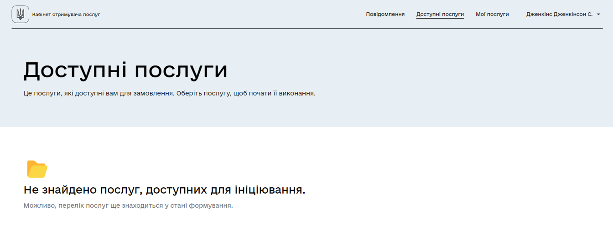
| Рекомендований спосіб створення файлів бізнес-процесів описаний у розділі Моделювання у настільному додатку Camunda Modeler документа Варіанти та загальний алгоритм моделювання бізнес-процесів. |
Алгоритм усунення
Доступ до бізнес-процесів визначається у наступних файлах:
-
registry-regulations\bp-auth\citizen.yml— відповідає за бізнес-процеси, що відображаються у кабінеті користувача. -
registry-regulations\bp-auth\officer.yml— відповідає за бізнес-процеси, що відображаються у кабінеті посадової особи.
Якщо отримувачі послуг не мають доступу до відповідних бізнес-процесів, необхідно додати доступи для бізнес-процесів для отримувачів послуг з ролями: citizen, unregistered-individual, individual.
Після внесення змін збережіть їх у віддаленому репозиторії Gerrit та дочекайтеся успішного проходження всіх пайплайнів регламенту.
У результаті послуги мають стати доступними у Кабінеті користувача.
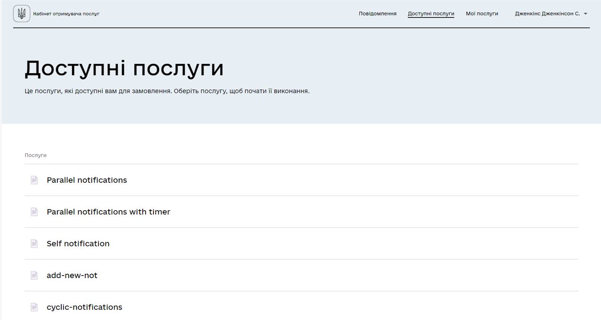
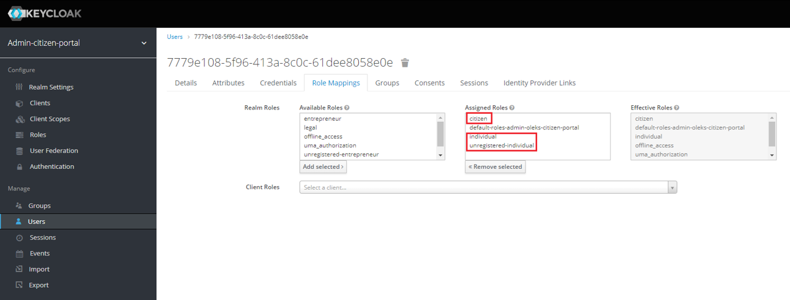 |
|
6. Помилки, що виникають у Kibana
6.1. Помилка 502 у Kibana (невірно створений шаблон пошуку)
Помилка
При переході у розділ Discover у Kibana, з’являється помилка 502 Response.
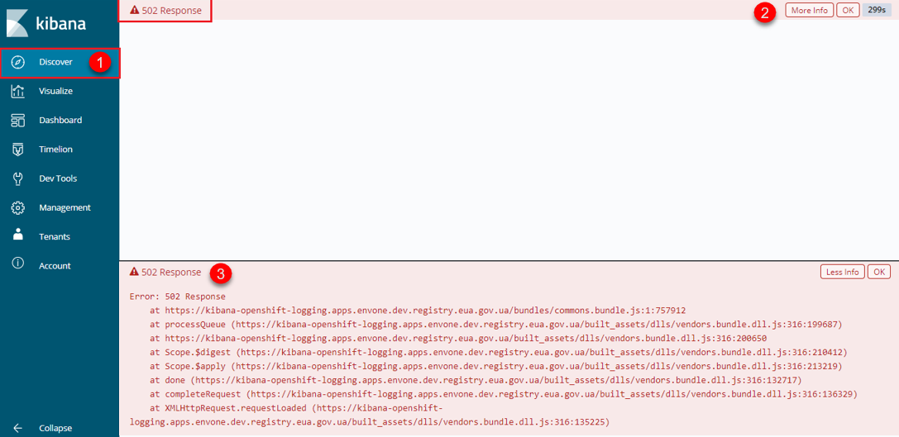
Алгоритм усунення
Видалення невірно створеного індексу
Для видалення помилкового індексу виконайте наступні кроки:
-
Перейдіть на вкладку .
-
Зі списку (якщо пошукових патернів декілька) виберіть той, що викликає помилку, та натисніть кнопку видалення праворуч.
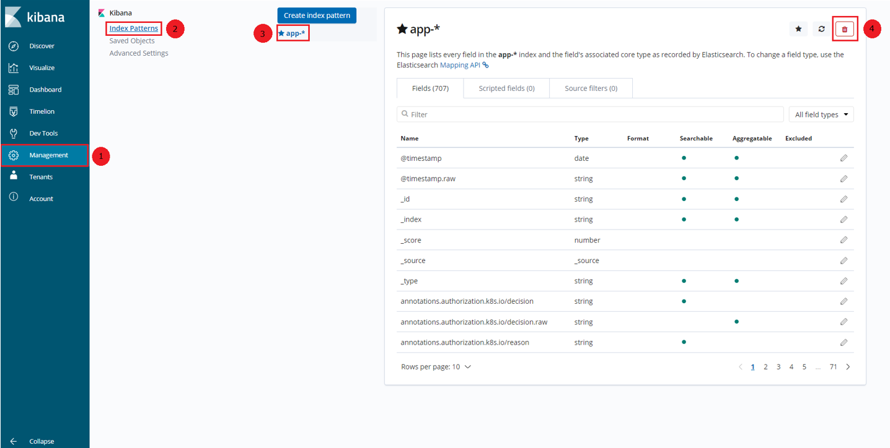
- Альтернативний спосіб:
-
Перейдіть на вкладку , відмітьте помилково створений індекс і видаліть його.
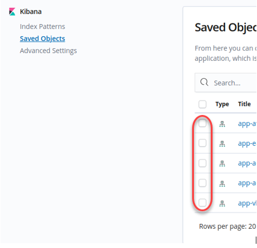
Створення індексу
Для створення нового індексу:
-
Перейдіть на вкладку .
-
Натисніть кнопку
Create index patternабо скористайтеся формою створення індексу праворуч.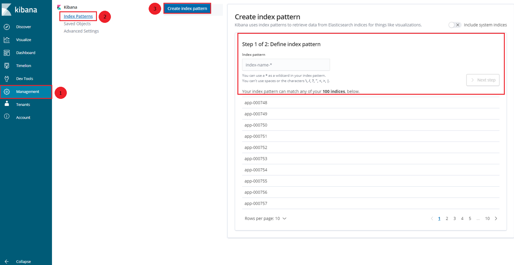
Назва індексу повинна мати такий формат:
app-<registry-name>-*, де registry-name — це ім’я вашого реєстру.
| Детальні інструкції по роботі з технічними логами ви можете знайти на сторінках розділу Reviewing the Platform event logs (Kibana). |
7. Помилки у Redash
7.1. Доступ до аналітичного представлення відсутній
Помилка
Якщо не надати доступ ролі officer (надавачу послуг) до нових чи змінених аналітичних представлень, виникає помилка.
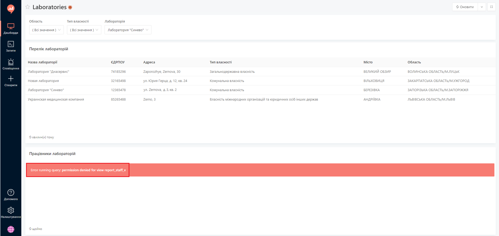
Алгоритм усунення
Щоб виправити помилку, виконайте наступне:
При додаванні нових або змінених аналітичних представлень (для створення нового дашборда або додавання віджетів до наявних) у файлі .xml додайте changeSet з тегом <ext:grantAll>. Вкажіть у ньому роль analytics_officer.
<changeSet author="registry owner" id="grants to all analytics users">
<ext:grantAll>
<ext:role name="analytics_officer"/>
</ext:grantAll>
</changeSet>| Якщо ви змінюєте наявне аналітичне представлення, спочатку видаліть його через окремий changeSet, а потім додайте змінене представлення через новий changeSet. |
Після надання прав доступу до аналітичного представлення для ролі officer, помилка зникне.
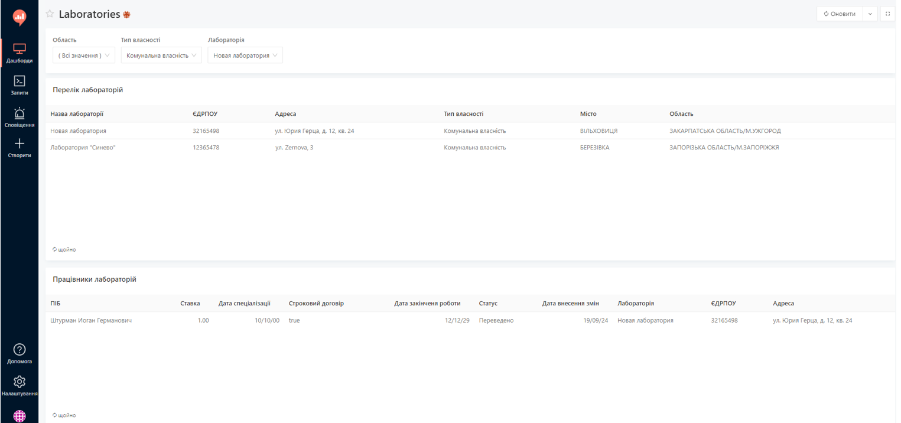
| Для отримання додаткової інформації перейдіть за посиланням: Дебаг під час моделювання регламенту реєстру |